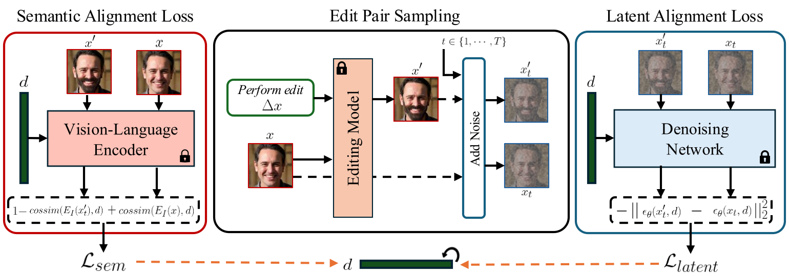
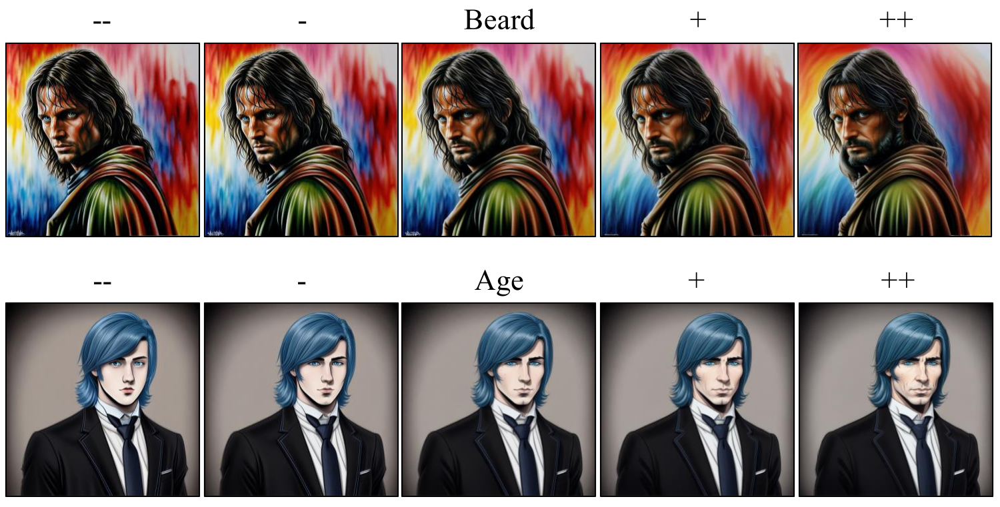
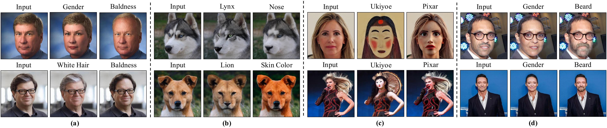
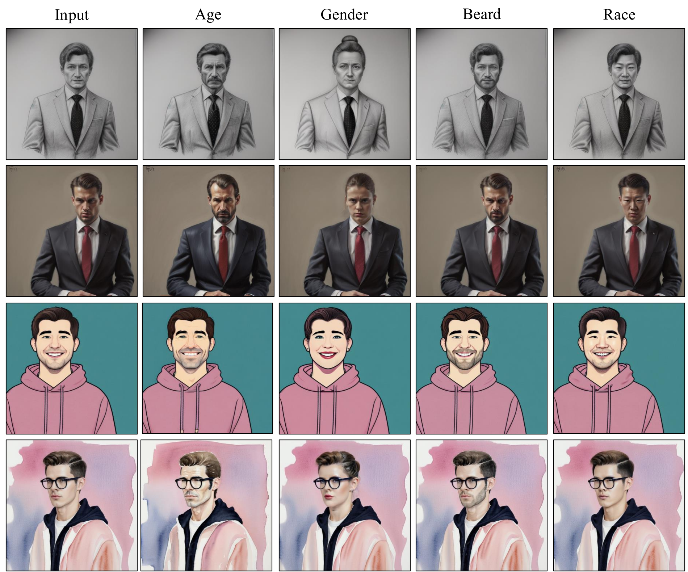
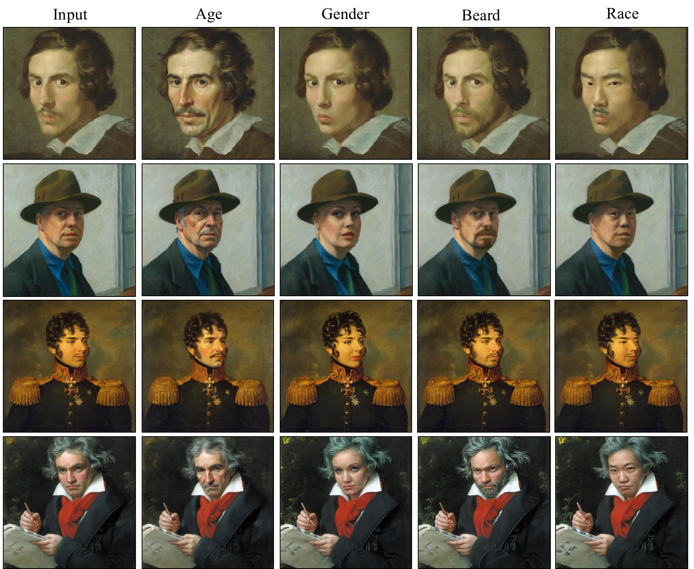
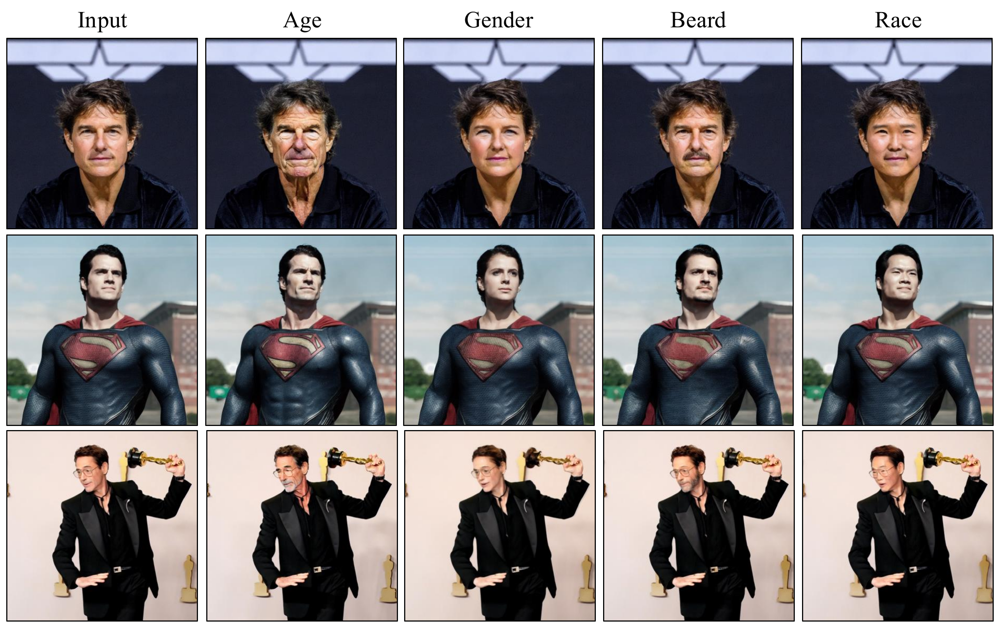

ViDiT learns a single continuous editing direction from a handful of before-and-after image pairs — then applies it to any image, zero-shot. No fine-tuning. No per-image optimization.
The rapid advancement of diffusion models has enabled the generation of high-fidelity images from textual prompts, yet achieving precise, disentangled control over specific attributes remains a significant challenge. A fundamental limitation arises because visual differences between images are often far more descriptive and nuanced than what can be captured through human-crafted text descriptions. To address this, we introduce ViDiT (Visual Direction Transfer for Diffusion), a framework that expands the editing vocabulary by capturing latent semantics directly from image-edit pairs. ViDiT learns the underlying transformation by optimizing a single, global, and continuous editing direction from a small set of "before-and-after" examples, transferring visual changes into the diffusion model's conditioning space. Operating on a "Learn Once" principle, it eliminates the need for model fine-tuning or expensive per-image optimization at inference. Once learned, these continuous directions enable "Edit Anywhere" capabilities — highly disentangled manipulations of facial features, animal attributes, or artistic styles applied to any image in a zero-shot manner with granular control over edit intensity. Quantitative and qualitative evaluations demonstrate that ViDiT outperforms existing text-based editing methods in maintaining input faithfulness while achieving precise, scalable attribute control.
Given image-edit pairs from any source, ViDiT optimizes a single direction d in the diffusion model's conditioning space — with the base model and encoder kept entirely frozen.

Framework. A semantic alignment loss uses a frozen vision-language (CLIP) encoder to place d in the right conceptual neighborhood, while a latent alignment loss leverages the denoiser's dense, spatially-aligned predictions to preserve fine-grained identity. Only d is updated.
A small set of before-and-after pairs (x, x′) from any editing source — GANs, domain-adaptation models, or diffusion editors — encodes the precise visual delta, with no linguistic ambiguity.
A dual objective optimizes a single continuous direction d: semantic alignment locks in the right concept; latent alignment sharpens spatial precision. The model and encoder stay frozen.
At inference, d is injected additively into classifier-free guidance with a scale λe for continuous, bidirectional control — and multiple directions compose without retraining.
Learning a direction is a one-time optimization per concept. Only $\mathbf{d}$ is updated — the diffusion model $\epsilon_\theta$ and the CLIP encoder $E_I$ stay completely frozen.
Because the edit is a continuous direction $\mathbf{d}$, the scale $\lambda_e$ turns a single learned concept into a smooth, bidirectional dial — from removing the attribute ($-\lambda_e$) to amplifying it ($+\lambda_e$) — all from the same direction, on the same image.

Edit interpolation on generated images. Sweeping $\lambda_e$ for the Beard (top) and Age (bottom) directions on Stable-Diffusion portraits. The identity and artistic style are preserved throughout — only the targeted attribute moves along the direction.
Fine-grained directions drawn from diverse supervision sources, transferred zero-shot to in-the-wild images.

(a) Facial attributes (Bald, Gender, White Hair) from StyleGAN2/FFHQ · (b) Animal attributes (Lynx, Lion, Skin Color) from StyleGAN2/AFHQ · (c) Artistic styles (Ukiyoe, Pixar) from StyleGAN-NADA · (d) Semantic edits (Gender, Beard) from Prompt2Prompt. Across all cases, edits stay disentangled and preserve identity, background, and style.
The same learned directions transfer across wildly different image distributions — synthetic generations, classical paintings, and real in-the-wild photographs — while preserving identity, background, and style.

Generated Images. ViDiT applies the desired semantic without inversion, while preserving the stylization of the generated image.

Artistic Paintings. Edits are applied without altering the overall artistic style of the image (e.g. an oil-painting look is retained).

Real Images. ViDiT generalizes beyond face-centered crops to diverse scenes and subjects, preserving identity and background.